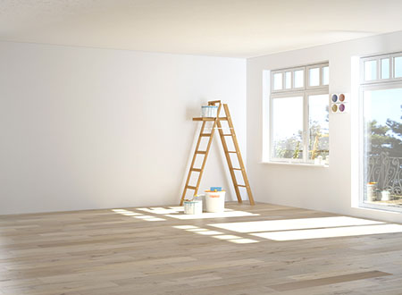
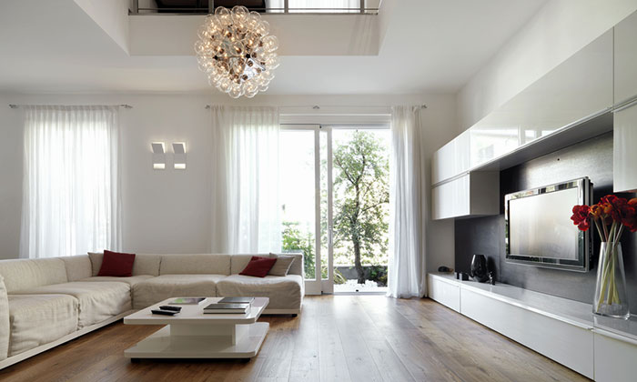
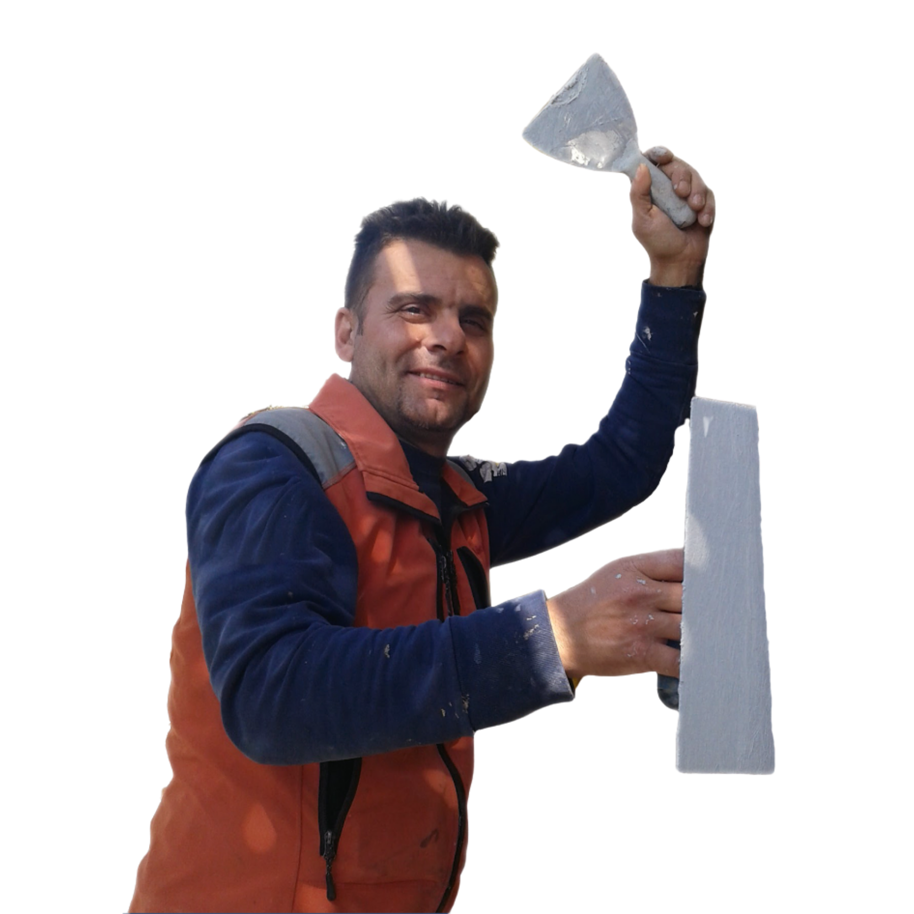

Ristrutturazioni
Per trasformare gli ambienti e renderli più funzionali.
Interventi completi o parziali per abitazioni, locali e spazi interni, con attenzione a funzionalità, estetica e finiture.
Richiedi informazioni →Ad Arco, Riva del Garda e nei comuni limitrofi.
Da oltre trent'anni Francesco Giunta segue personalmente interventi edili, ristrutturazioni e manutenzioni per privati e attività locali. Un unico referente, dal primo sopralluogo alla conclusione del lavoro.
Dalla piccola manutenzione alla ristrutturazione completa: ogni lavoro viene affrontato con la stessa cura e professionalità.
Per trasformare gli ambienti e renderli più funzionali.
Interventi completi o parziali per abitazioni, locali e spazi interni, con attenzione a funzionalità, estetica e finiture.
Richiedi informazioni →Per rinnovare gli spazi con finiture pulite e curate.
Pitture interne, finiture decorative e tinteggiature per rinnovare ambienti domestici e professionali ad Arco e dintorni.
Richiedi informazioni →Per organizzare meglio gli ambienti e creare nuove soluzioni.
Pareti, controsoffitti, velette e soluzioni su misura per migliorare gli spazi a Riva del Garda e Arco.
Richiedi informazioni →Per dare agli spazi una base resistente e coerente.
Posa e sostituzione di pavimenti e rivestimenti per bagni, cucine e ambienti interni ad Arco e Riva del Garda.
Richiedi informazioni →Per superfici precise, pronte per qualsiasi finitura finale.
Preparazione delle superfici, rasature e finiture precise per risultati puliti e professionali su pareti e soffitti.
Richiedi informazioni →Per risolvere rapidamente piccoli e grandi problemi.
Piccoli interventi, riparazioni e lavori ordinari per mantenere casa e locali in buone condizioni nel tempo.
Richiedi informazioni →Per intervenire sugli spazi in modo preciso e affidabile.
Interventi su pareti, aperture, ripristini e lavori murari interni per abitazioni e locali commerciali.
Richiedi informazioni →Per liberare e recuperare locali inutilizzati.
Sgombero e liberazione di cantine, garage e soffitte, con servizio pratico e organizzato per privati e aziende.
Richiedi informazioni →Nessuna complicazione inutile. Dal primo contatto alla consegna del lavoro, ogni passo è trasparente e diretto.
Scrivi o chiama per spiegare il lavoro di cui hai bisogno. Puoi inviare anche foto o descrivere la situazione con un messaggio.
Si raccolgono informazioni e dettagli utili per capire l'intervento e verificare concretamente cosa serve.
Quando necessario, viene effettuato un sopralluogo in zona Arco o Riva del Garda per vedere il lavoro di persona.
Il cliente riceve una proposta chiara, senza sorprese, in base al lavoro da svolgere e ai materiali necessari.
Il lavoro viene eseguito con attenzione, ordine e precisione, rispettando i tempi concordati e le esigenze del cliente.
L'intervento viene completato lasciando l'ambiente pulito e in ordine. Il cliente viene informato su quanto fatto.
Le immagini definitive saranno selezionate con il cliente e aggiornate con lavori reali eseguiti sul territorio.

Esempio grafico
Francesco segue personalmente ogni fase del lavoro: dal primo contatto alla valutazione dell'intervento, fino alla realizzazione e alla consegna. Questo permette di mantenere una comunicazione diretta, ridurre le incomprensioni e trovare soluzioni adatte alle reali necessità del cliente.
Posso Farlo Io nasce dall'esperienza e dalla manualità di un artigiano edile specializzato in lavori per abitazioni, locali e attività del territorio di Arco e Riva del Garda. Ogni intervento viene seguito con precisione e rispetto delle esigenze di chi abita o lavora nello spazio.

Operiamo principalmente ad Arco e Riva del Garda, con possibilità di interventi anche nei comuni limitrofi dell'Alto Garda in base al tipo di lavoro richiesto.
Per lavori edili, ristrutturazioni, tinteggiature, cartongesso e manutenzioni nella zona del Garda trentino, contatta Francesco per una valutazione.
Verifica disponibilità nella tua zonaComuni principali
Scrivi su WhatsApp per spiegare il lavoro di cui hai bisogno. Puoi inviare anche foto dell'ambiente o dell'intervento da valutare. Verrai ricontattato appena possibile.
Puoi descrivere l'intervento, indicare la zona e aggiungere le informazioni principali. Il messaggio verrà preparato automaticamente e potrai inviarlo direttamente tramite WhatsApp.